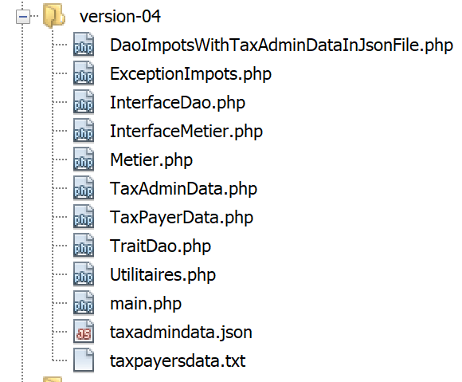
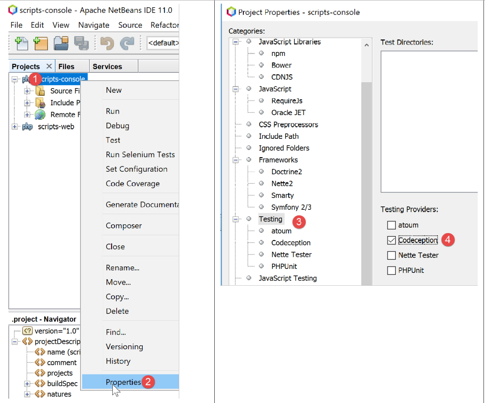
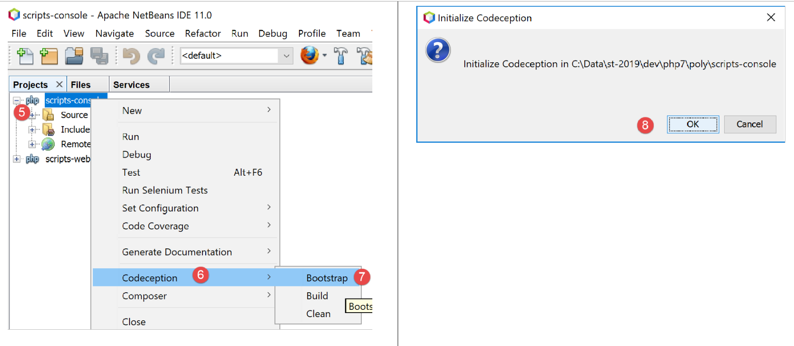
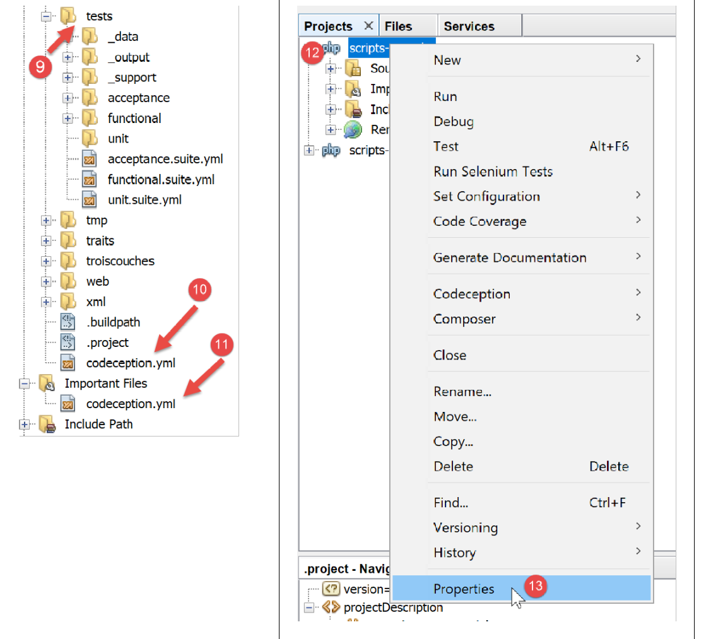
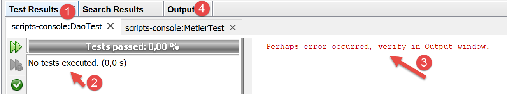

11. 练习题 – 第4版
该税务计算应用程序将采用以下分层架构：

我们将复用链接章节中第 3 版的组件，并对其进行修改以适应应用程序的新架构。这有时被称为“重构”。在此，我们假设应用程序所需的数据存储在文本文件中。[Dao] 层将负责处理与这些文件的交互。
11.1. 脚本树

11.2. 层间交换的对象
我们将保留第3版中的某些对象。在此列出以供参考。
[ExceptionImpots] 异常是 [Dao] 层在遇到数据访问问题或数据性质问题（数据错误）时会抛出的异常。
<?php
// namespace
namespace Application;
class ExceptionImpots extends \RuntimeException {
public function __construct(string $message, int $code=0) {
parent::__construct($message, $code);
}
}
[Utilities] 类包含用于管理文本文件的方法（在此情况下，仅包含一个方法）：
<?php
// namespace
namespace Application;
// a class of utility functions
abstract class Utilitaires {
public static function cutNewLinechar(string $ligne): string {
// delete the end-of-line mark from $ligne if it exists
$longueur = strlen($ligne); // line length
while (substr($ligne, $longueur - 1, 1) == "\n" or substr($ligne, $longueur - 1, 1) == "\r") {
$ligne = substr($ligne, 0, $longueur - 1);
$longueur--;
}
// end - return the line
return($ligne);
}
}
[TaxAdminData] 类是封装税务管理数据的类：
<?php
namespace Application;
class TaxAdminData {
// tax brackets
private $limites;
private $coeffR;
private $coeffN;
// tax calculation constants
private $plafondQfDemiPart;
private $plafondRevenusCelibatairePourReduction;
private $plafondRevenusCouplePourReduction;
private $valeurReducDemiPart;
private $plafondDecoteCelibataire;
private $plafondDecoteCouple;
private $plafondImpotCouplePourDecote;
private $plafondImpotCelibatairePourDecote;
private $abattementDixPourcentMax;
private $abattementDixPourcentMin;
// initialization
public function setFromJsonFile(string $taxAdminDataFilename): TaxAdminData {
// retrieve the contents of the tax data file
$fileContents = \file_get_contents($taxAdminDataFilename);
…
// we return the object
return $this;
}
private function check($value): \stdClass {
…
return $result;
}
// toString
public function __toString() {
// object's Json string
return \json_encode(\get_object_vars($this), JSON_UNESCAPED_UNICODE);
}
// getters and setters
public function getLimites() {
return $this->limites;
}
…
public function setLimites($limites) {
$this->limites = $limites;
return $this;
}
…
}
我们添加了一个新类 [TaxPayerData]，用于封装写入结果文件的数据：
<?php
// namespace
namespace Application;
// data class
class TaxPayerData {
// data required to calculate the taxpayer's tax liability
private $marié;
private $enfants;
private $salaire;
// tax calculation results
private $montant;
private $surcôte;
private $décôte;
private $réduction;
private $taux;
// setter
public function setFromParameters(string $marié, int $nbEnfants, int $salaireAnnuel) : TaxPayerData{
// taxpayer data required for tax calculation
$this->marié = $marié;
$this->enfants = $nbEnfants;
$this->salaire = $salaireAnnuel;
// initialize the object
return $this;
}
// getters and setters
public function getMarié() {
return $this->marié;
}
…
public function setMarié($marié) {
$this->marié = $marié;
return $this;
}
…
// toString
public function __toString() {
// object's Json string
return \json_encode(\get_object_vars($this), JSON_UNESCAPED_UNICODE);
}
}
注意：请使用自动代码生成功能来生成构造函数、getter 和 setter（参见相关章节）。请注意，setter 采用“流式”设计。
11.3. [DAO] 层
这里我们重点关注应用程序的 [1] 层：

11.3.1. [InterfaceDao] 接口
[DAO]层的接口如下所示 [InterfaceDao.php]：
<?php
// namespace
namespace Application;
interface InterfaceDao {
// reading taxpayer data
public function getTaxPayersData(string $taxPayersFilename, string $errorsFilename): array;
// reading tax data (tax brackets)
public function getTaxAdminData(): TaxAdminData;
// recording results
public function saveResults(string $resultsFilename, array $taxPayersData): void;
}
注释
- 要求如下：
- 纳税人数据存储在文本文件中；
- 税款计算结果保存在文本文件中；
- 任何错误均保存在文本文件中；
- 税务机关提供的数据格式未知。对于每种新格式，都必须由一个新类来实现 [InterfaceDao] 接口；
- 接口中在访问数据时遇到致命错误的方法必须抛出类型为 [TaxException] 的异常；
- 第 9 行：用于检索纳税人数据 [婚姻状况、子女数量、年薪] 的方法；
- 第一个参数是包含这些数据的文本文件名；
- 第二个参数是用于记录遇到任何错误的文本文件名；
- 第 12 行：从税务机关检索数据的方法。此处未传递参数，因为我们不知道数据是如何存储的；
- 第 15 行：用于将税务计算结果保存到文本文件的方法，该文件的名称作为参数传入；
在编写 [InterfaceDao] 接口时，我们知道根据税务管理数据的存储方式不同，[getTaxAdminData] 方法的实现方式也会有所不同。 因此，[InterfaceDao] 接口将由不同的类来实现，每个类负责处理该数据的特定存储方式（数组、文本文件、数据库、Web 服务）。尽管如此，这些派生类仍将共享共同的代码，特别是 [getTaxPayersData] 和 [saveResults] 方法的实现。我们知道，此用例可以通过两种方式实现（参见相关段落）：
- 我们创建一个抽象类 C，其中包含派生类共有的代码。类 C 实现了接口 I，但某些必须在派生类中声明的方法在类 C 中被声明为抽象方法，因此类 C 本身也是抽象的。随后，我们创建从 C 派生的类 C1 和 C2，它们各自以自己的方式实现了父类 C 中未定义（抽象）的方法；
- 我们创建一个特质 T，其与前一种解决方案中的抽象类 C 几乎完全相同。该特质不实现接口 I，因为从语法上讲它无法实现。随后，我们创建类 C1 和 C2，它们实现接口 I 并使用特质 T。这些类只需实现接口 I 中未被其导入的特质 T 所实现的方法即可；
在此示例中，我们将使用一个名为 [TraitDao] 的特质。
11.3.2. [TraitDao] 特质
[TraitDao] 特性的代码如下 [TraitDao.php]：
<?php
// namespace
namespace Application;
trait TraitDao {
// reading taxpayer data
public function getTaxPayersData(string $taxPayersFilename, string $errorsFilename): array {
// taxpayer data table
$taxPayersData = [];
// error table
$errors = [];
// many errors can occur when managing files
try {
// reading user data
// each line has the form marital status, number of children, annual salary
$taxPayersFile = fopen($taxPayersFilename, "r");
if (!$taxPayersFile) {
throw new ExceptionImpots("Impossible d'ouvrir en lecture les déclarations des contribuables [$taxPayersFilename]", 12);
}
// the current line of the user data file is used
// in the form of marital status, number of children, annual salary
$num = 1; // n° current line
$nbErreurs = 0; // number of errors encountered
while ($ligne = fgets($taxPayersFile, 100)) {
// empty lines are neglected
$ligne = trim($ligne);
if (strlen($ligne) == 0) {
// next line
$num++;
// we loop again
continue;
}
// remove any end-of-line marker
$ligne = Utilitaires::cutNewLineChar($ligne);
// we retrieve the 3 fields married:children:salary which form $ligne
list($marié, $enfants, $salaire) = explode(",", $ligne);
// we check them
// marital status must be yes or no
$marié = trim(strtolower($marié));
$erreur = ($marié !== "oui" and $marié !== "non");
if (!$erreur) {
// the number of children must be an integer
$enfants = trim($enfants);
if (!preg_match("/^\d+$/", $enfants)) {
$erreur = TRUE;
} else {
$enfants = (int) $enfants;
}
}
if (!$erreur) {
// the salary is a whole number without the euro cents
$salaire = trim($salaire);
if (!preg_match("/^\d+$/", $salaire)) {
$erreur = TRUE;
} else {
$salaire = (int) $salaire;
}
}
// mistake?
if ($erreur) {
$errors[] = "la ligne [$num] du fichier [$taxPayersFilename] est erronée";
$nbErreurs++;
} else {
// memorize information
$taxPayersData[] = (new TaxPayerData())->setFromParameters($marié, $enfants, $salaire);
}
// next line
$num++;
}
// are we at the end of the file?
if (!feof($taxPayersFile)) {
// we're out of the loop on a read error
throw new ExceptionImpots("Erreur lors de la lecture de la ligne n° [$num] du fichier [$taxPayersFilename]");
} else {
// we're out of the loop at the end-of-file mark
// save errors in a text file
$this->saveString($errorsFilename, implode("\n", $errors));
// function result
return $taxPayersData;
}
} finally {
// close the file if it is open
if ($taxPayersFile) {
fclose($taxPayersFile);
}
}
}
// recording results
public function saveResults(string $resultsFilename, array $taxPayersData): void {
// save table [$taxPayersData] in text file [$resultsFileName]
// if text file [$resultsFileName] does not exist, it is created
$this->saveString($resultsFilename, implode("\n", $taxPayersData));
}
// saving table results in a text file
private function saveString(string $fileName, string $data): void {
// save table [$data] in text file [$fileName]
// if text file [$fileName] does not exist, it is created
if (file_put_contents($fileName, $data) === FALSE) {
throw new ExceptionImpots("Erreur lors de l'enregistrement de données dans le fichier texte [$fileName]");
}
}
}
评论
- 第 6 行：此处定义的是一个特质（trait），而非类；
- 第9–89行：[getTaxPayersData]方法实现了[InterfaceDao]接口中同名的方法。它从名为[$taxPayersFilename]的文本文件中检索纳税人数据[婚姻状况、子女数量、年薪 ]。 它将这些数据作为类型为 [TaxPayerData] 的元素组成的数组 [$taxPayersData] 返回（第 67、81 行）；
- [getTaxPayersData] 方法与链接章节中描述的 [AbstractBaseImpots::executeBatchImpots] 方法非常相似，但存在以下区别：
- [getTaxPayersData] 方法仅检索纳税人数据，不执行任何税务计算。此处，税务计算由 [business] 层负责；
- 与 [executeBatchImpots] 方法一样，它会报告错误。在此，错误首先存储在数组 [$errors] 中（第 13 行），随后在处理结束时保存到文本文件中（第 79 行）。根据具体情况，该数组可能为空，也可能不为空；
- 若发生致命错误，将抛出 [ExceptionImpots] 异常（第 20、75 行）；
- 第 73 行：请注意第 26–71 行中循环结束时执行的处理。事实上，[fgets] 函数存在一个缺陷：无论是在读取行时遇到文件结束标记，还是因错误导致读取失败，它都会返回布尔值 FALSE。为了区分这两种情况，我们使用 [feof] 函数检查是否已到达文件末尾。 如果尚未到达文件末尾，则表示发生了错误，此时我们会抛出异常；
- 第 83–88 行：无论文件处理过程中是否发生异常，[finally] 代码块都会被执行；
- 第 85 行：如果文件已打开，则文件的“句柄” [$taxPayersFile] 具有布尔值 TRUE；否则为 FALSE；
- 第 99–105 行：调用第 79 行中使用的私有方法 [saveString]，将错误数组保存到文本文件中；
- 第 99 行：[saveString] 方法接受两个参数：
- [string $filename]，即用于保存数据的文本文件名；
- [string $filename]，即用于保存数据的文本文件名；[string $data]，即要保存到文本文件中的字符串。该字符串将是一系列以换行符 \n 结尾的行；
- 第 102 行：PHP 函数 [file_puts_contents] 用于将字符串写入文本文件。它会打开文件，将字符串写入其中，然后关闭文件。若发生错误，则返回 FALSE；
- 第 103 行：如果发生错误，将抛出异常；
- 第 92–96 行：实现了 [InterfaceDao] 接口的 [saveResults] 方法。此处再次使用了私有方法 [saveString]。在此，[saveString] 的第二个参数是一个由数组 [$taxPayersData] 构成的字符串，该数组的元素类型为 [TaxPayerData]。人们可能会好奇，该操作的结果会是什么：
implode("\n", $taxPayersData)
我们在 [TaxPayerData] 类中定义了以下 [__toString] 方法（参见相关章节）：
public function __toString() {
// chaîne Json de l'objet
return \json_encode(\get_object_vars($this), JSON_UNESCAPED_UNICODE);
}
该操作
implode("\n", $taxPayersData)
将把数组 [$taxPayersData] 的每个元素（通过其 [__toString] 方法转换为字符串）与换行符 \n 拼接在一起。这将生成如下形式的字符串：
json1\njson2\n…
结论
[TraitDao] 特质实现了 [InterfaceDao] 接口中的两个方法：[getTaxPayersData] 和 [saveResults]：
<?php
// namespace
namespace Application;
interface InterfaceDao {
// reading taxpayer data
public function getTaxPayersData(string $taxPayersFilename, string $errorsFilename): array;
// reading tax data (tax brackets)
public function getTaxAdminData(): TaxAdminData;
// recording results
public function saveResults(string $resultsFilename, array $taxPayersData): void;
}
我们还需要实现 [getTaxAdminData] 方法，该方法用于从税务管理部门获取数据。
11.3.3. [ImpotsWithTaxAdminDataInJsonFile] 类
[ImpotsWithTaxAdminDataInJsonFile] 类如下所示实现了 [InterfaceDao] 接口：
<?php
// namespace
namespace Application;
// definition of a ImpotsWithDataInFile class
class DaoImpotsWithTaxAdminDataInJsonFile implements InterfaceDao {
// use of a line
use TraitDao;
// the TaxAdminData object containing tax bracket data
private $taxAdminData;
// the manufacturer
public function __construct(string $taxAdminDataFilename) {
// we want to initialize the [$this->taxAdminData] attribute
$this->taxAdminData = (new TaxAdminData())->setFromJsonFile($taxAdminDataFilename);
}
// returns data for tax calculation
public function getTaxAdminData(): TaxAdminData {
return $this->taxAdminData;
}
}
评论
- 第 7 行：类 [ImpotsWithTaxAdminDataInJsonFile] 实现了接口 [InterfaceDao]；
- 第 9 行：[ImpotsWithTaxAdminDataInJsonFile] 类使用了 [traitDao] 特质，正如我们所知，该特质实现了 [InterfaceDao] 接口的 [getTaxPayersData] 和 [saveResults] 方法。 因此，剩下的就是让 [ImpotsWithTaxAdminDataInJsonFile] 类实现 [getTaxAdminData] 方法，该方法用于从税务管理部门获取数据；
- 第 11 行：第 20–22 行 [getTaxAdminData] 方法返回的 [TaxAdminData] 类型属性。该属性由第 14–17 行的构造函数进行初始化；
至此，我们已完成应用程序的 [DAO] 层：我们拥有一个完全实现了所定义的 [InterfaceDao] 接口的类。现在我们可以继续进行 [business] 层的开发。
11.4. [business] 层
接下来，我们将实现架构的第[2]层：

11.4.1. [InterfaceMétier] 接口
[业务]层的接口如下所示：
<?php
// namespace
namespace Application;
interface InterfaceMetier {
// calculating a taxpayer's taxes
public function calculerImpot(string $marié, int $enfants, int $salaire): array;
// batch mode tax calculation
public function executeBatchImpots(string $taxPayersFileName, string $resultsFileName, string $errorsFileName): void;
}
注释
- 第 9 行：[BusinessInterface] 接口可以计算单个纳税人的税额，前提是提供了以下信息：婚姻状况、子女数量、年薪。[calculateTax] 方法不使用 [DAO] 层，因此不会抛出异常；
- 第 9 行：[BusinessInterface] 接口还可以为一组纳税人计算税额，这些纳税人的数据存储在名为 [$taxPayersFileName] 的文本文件中。它将结果写入名为 [$resultsFileName] 的文本文件。 [executeBatchImpots] 方法必须与负责文件系统访问的 [dao] 层进行通信。此时，[dao] 层可能会抛出异常，而 [executeBatchImpots] 方法不会捕获这些异常：它将允许异常传播到主脚本。非致命错误将记录在名为 [$errorsFileName] 的文本文件中；
- 第 9 行：[calculateTax] 方法是一个纯粹的 [business] 方法。它不关心所用数据的来源；
- 第 12 行：[executeBatchImports] 方法将与 [dao] 层交互，以读写文本文件中的数据。它将反复调用业务方法 [calculateTax]；
11.4.2. [Business] 类
[Metier] 类如下所示实现了 [InterfaceMetier] 接口：
<?php
// namespace
namespace Application;
class Metier implements InterfaceMetier {
// dao layer
private $dao;
// tax administration data
private $taxAdminData;
//---------------------------------------------
// setter couche [dao]
public function setDao(InterfaceDao $dao) {
$this->dao = $dao;
return $this;
}
public function __construct(InterfaceDao $dao) {
// a reference is stored on the [dao] layer
$this->dao = $dao;
// recover data for tax calculation
// method [getTaxAdminData] may throw a ExceptionImpots exception
// we then let it go back to the calling code
$this->taxAdminData = $this->dao->getTaxAdminData();
}
// tAX CALCULATION
// --------------------------------------------------------------------------
public function calculerImpot(string $marié, int $enfants, int $salaire): array {
…
// result
return ["impôt" => floor($impot), "surcôte" => $surcôte, "décôte" => $décôte, "réduction" => $réduction, "taux" => $taux];
}
// --------------------------------------------------------------------------
private function calculerImpot2(string $marié, int $enfants, float $salaire): array {
…
// result
return ["impôt" => $impôt, "surcôte" => $surcôte, "taux" => $coeffR[$i]];
}
// revenuImposable=annualwage-discount
// the allowance has a minimum and a maximum
private function getRevenuImposable(float $salaire): float {
…
// result
return floor($revenuImposable);
}
// calculates any discount
private function getDecôte(string $marié, float $salaire, float $impots): float {
…
// result
return ceil($décôte);
}
// calculates any reduction
private function getRéduction(string $marié, float $salaire, int $enfants, float $impots): float {
…
// result
return ceil($réduction);
}
// batch mode tax calculation
public function executeBatchImpots(string $taxPayersFileName, string $resultsFileName, string $errorsFileName): void {
…
// recording results
$this->dao->saveResults($resultsFileName, $results);
}
}
评论
- 第 6 行：[Business] 类实现了 [BusinessInterface] 接口，即 [calculateTax]（第 30–34 行）和 [executeBatchTaxes]（第 66–70 行）方法；
- 第 8 行：对 [dao] 层的引用。此引用是必要的，以便 [business] 层在需要外部数据时知道去哪里查找。该属性将通过第 14–17 行的 setter 方法或第 19–26 行的构造函数进行初始化；
- 第 10 行：封装税务管理数据的 [TaxAdminData] 类型对象。业务方法 [calculateTax] 需要此数据。该属性通过第 19–26 行的构造函数进行初始化；
- 第 19–26 行：构造函数初始化该类的两个属性：
- [$dao] 属性通过作为构造函数参数传递的引用进行初始化。请注意，该参数的类型是 [InterfaceDao] 接口的类型，这使得 [Metier] 类可以由任何实现该接口的类进行初始化；
- 属性 [$taxAdminData] 通过调用 [dao] 层的 [getTaxAdminData] 方法进行初始化；
由此可知，当执行 [calculateTaxes] 和 [executeBatchTaxes] 方法时，[$dao] 和 [$taxAdminData] 这两个属性均已初始化。
[calculateTaxes] 方法如下：
public function calculerImpot(string $marié, int $enfants, int $salaire): array {
// $marié : oui, non
// $enfants : nombre d'enfants
// $salaire : salaire annuel
// $this->taxAdminData : données de l'administration fiscale
//
// on vérifie qu'on a bien les données de l'administration fiscale
if ($this->taxAdminData === NULL) {
$this->taxAdminData = $this->getTaxAdminData();
}
// calcul de l'impôt avec enfants
$result1 = $this->calculerImpot2($marié, $enfants, $salaire);
$impot1 = $result1["impôt"];
// calcul de l'impôt sans les enfants
if ($enfants != 0) {
$result2 = $this->calculerImpot2($marié, 0, $salaire);
$impot2 = $result2["impôt"];
// application du plafonnement du quotient familial
$plafonDemiPart = $this->taxAdminData->getPlafondQfDemiPart();
if ($enfants < 3) {
// $PLAFOND_QF_DEMI_PART euros pour les 2 premiers enfants
$impot2 = $impot2 - $enfants * $plafonDemiPart;
} else {
// $PLAFOND_QF_DEMI_PART euros pour les 2 premiers enfants, le double pour les suivants
$impot2 = $impot2 - 2 * $plafonDemiPart - ($enfants - 2) * 2 * $plafonDemiPart;
}
} else {
$impot2 = $impot1;
$result2 = $result1;
}
// on prend l'impôt le plus fort
if ($impot1 > $impot2) {
$impot = $impot1;
$taux = $result1["taux"];
$surcôte = $result1["surcôte"];
} else {
$surcôte = $impot2 - $impot1 + $result2["surcôte"];
$impot = $impot2;
$taux = $result2["taux"];
}
// calcul d'une éventuelle décôte
$décôte = $this->getDecôte($marié, $salaire, $impot);
$impot -= $décôte;
// calcul d'une éventuelle réduction d'impôts
$réduction = $this->getRéduction($marié, $salaire, $enfants, $impot);
$impot -= $réduction;
// résultat
return ["impôt" => floor($impot), "surcôte" => $surcôte, "décôte" => $décôte, "réduction" => $réduction, "taux" => $taux];
}
注释
- 此代码来自第 3 版中的 [AbstractBaseImpots::calculateTax] 方法，相关说明请参见链接部分。私有方法 [calculateTax2, getDiscount, getReduction, getTaxableIncome] 亦是如此；
[Metier::executeBatchImpots] 方法如下：
public function executeBatchImpots(string $taxPayersFileName, string $resultsFileName, string $errorsFileName): void {
// we let the exceptions coming from the [dao] layer flow upwards
// retrieve taxpayer data
$taxPayersData = $this->dao->getTaxPayersData($taxPayersFileName, $errorsFileName);
// results table
$results = [];
// we exploit them
foreach ($taxPayersData as $taxPayerData) {
// tax calculation
$result = $this->calculerImpot(
$taxPayerData->getMarié(),
$taxPayerData->getEnfants(),
$taxPayerData->getSalaire());
// complete [$taxPayerData]
$taxPayerData->setMontant($result["impôt"]);
$taxPayerData->setDécôte($result["décôte"]);
$taxPayerData->setSurCôte($result["surcôte"]);
$taxPayerData->setTaux($result["taux"]);
$taxPayerData->setRéduction($result["réduction"]);
// put the result in the results table
$results [] = $taxPayerData;
}
// recording results
$this->dao->saveResults($resultsFileName, $results);
}
注释
- 第 1 行：该方法必须针对文本文件 [$taxPayersFileName] 中找到的每个纳税人反复调用 [calculateTax] 方法。它必须将结果写入名为 [$resultsFileName] 的文本文件。 遇到的非致命错误将记录在名为 [$errorsFileName] 的文本文件中。该方法本身不会抛出异常，但允许 [dao] 层抛出的异常向上传播；
- 第 4 行：向 [dao] 层请求纳税人数据。这将返回一个 [TaxPayerData] 类型的数组，该类包含 [married, numberOfChildren, salary, amount, deduction, reduction, surcharge, rate] 属性（参见相关段落）。 若此处发生异常，由于未被 catch 块捕获，异常将自动回传至调用代码。这意味着一旦发生异常，第 6 行将不会被执行；
- 第 6 行：类型为 [TaxPayerData] 的结果数组；
- 第 8–22 行：为纳税人数组 [$taxPayersData] 的每个元素计算税额。为此，调用内部方法 [calculateTax]（第 10 行）；
- 第 15–19 行：使用计算结果初始化 [TaxPayerData] 中尚未初始化的属性；
- 第 21 行：将结果添加到结果数组 [$results] 中；
- 第24行：计算完所有纳税人的税额后，结果将保存到文本文件中。此任务由[dao]层负责；
结论
总体而言，[业务]层的编写相对简单，因为它与[DAO]层进行交互，而[DAO]层负责管理数据访问及相关错误处理。
11.5. 主脚本
现在，我们将编写架构中第[3]层的脚本：

主脚本如下 [main.php]：
<?php
// strict adherence to declared types of function parameters
declare (strict_types=1);
// namespace
namespace Application;
// error handling by PHP
//ini_set("display_errors", "0");
// interface and class inclusion
require_once __DIR__ . "/TaxAdminData.php";
require_once __DIR__ . "/TaxPayerData.php";
require_once __DIR__ . "/ExceptionImpots.php";
require_once __DIR__ . "/Utilitaires.php";
require_once __DIR__ . "/InterfaceDao.php";
require_once __DIR__ . "/TraitDao.php";
require_once __DIR__ . "/DaoImpotsWithTaxAdminDataInJsonFile.php";
require_once __DIR__ . "/InterfaceMetier.php";
require_once __DIR__ . "/Metier.php";
// test -----------------------------------------------------
// definition of constants
const TAXPAYERSDATA_FILENAME = "taxpayersdata.txt";
const RESULTS_FILENAME = "resultats.txt";
const ERRORS_FILENAME = "errors.txt";
const TAXADMINDATA_FILENAME = "taxadmindata.json";
try {
// creation of the [dao] layer
$dao = new DaoImpotsWithTaxAdminDataInJsonFile(TAXADMINDATA_FILENAME);
// creation of the [business] layer
$métier = new Metier($dao);
// tax calculation in batch mode
$métier->executeBatchImpots(TAXPAYERSDATA_FILENAME, RESULTS_FILENAME, ERRORS_FILENAME);
} catch (ExceptionImpots $ex) {
// error is displayed
print $ex->getMessage() . "\n";
}
// end
print "Terminé\n";
exit;
注释
- 第 24 行：纳税人数据文件的名称；
- 第25行：结果文件的名称；
- 第 26 行：错误文件的名称；
- 第 27 行：包含税务机关数据的 JSON 文件名；
- 第 31 行：创建 [dao] 层；
- 第 33 行：基于此 [dao] 层创建 [business] 层；
- 第 35 行：执行 [business] 层的 [executeBatchImports] 方法；
- 第 36–39 行：我们看到 [business] 层可能会抛出异常。这些异常在此处被捕获；
11.6. 可视化测试
11.6.1. 测试 #1
使用以下纳税人文件 [taxpayersdata.txt]：
oui,2,55555
oui,2,50000
oui,3,50000
non,2,100000
non,3x,100000
oui,3,100000
oui,5,100000x
non,0,100000
oui,2,30000
non,0,200000
oui,3,200000
我们得到以下错误文件 [errors.txt]：
la ligne [5] du fichier [taxpayersdata.txt] est erronée
la ligne [7] du fichier [taxpayersdata.txt] est erronée
以及以下结果文件 [resultats.txt]：
11.6.2. 测试 #2
在主脚本中，我们将一个不存在的文件名分配给纳税人文件：
控制台显示的结果如下：
Warning: fopen(taxpayersdata2.txt): failed to open stream: No such file or directory in C:\Data\st-2019\dev\php7\poly\scripts-console\impots\version-04\TraitDao.php on line 18
Impossible d'ouvrir en lecture les déclarations des contribuables [taxpayersdata2.txt]
Terminé
Done.
- 第 1 行：来自 PHP 解释器的警告；
- 第 2 行：来自 [dao] 层抛出的异常的错误消息；
可以抑制 PHP 解释器的错误信息：

上述代码的第 21 行指示系统不要显示 PHP 错误。在开发阶段，必须显示这些错误。而在生产环境中，必须隐藏它们。
执行结果如下：
Impossible d'ouvrir en lecture les déclarations des contribuables [taxpayersdata2.txt]
Terminé
11.7. 测试 [Codeception]
视觉测试非常不完善：
- 我们通常仅限于执行少数几个测试；
- 在目视检查过程中，我们可能不够专注，导致细节被忽略；
在实际的软件开发中，测试是由专门负责此项工作的专业人员编写的。他们致力于使测试尽可能全面。为此，他们会使用测试框架。
在此，我们将使用 Codeception 框架 [https://codeception.com/]，因为它可以集成到 NetBeans 中。这是一个功能强大的框架，但我们仅会使用其中的一部分功能。其核心思想是在每次完成应用程序练习的新版本后，能快速验证其是否正常运行。成功的测试结果能让开发者对其编写的代码充满信心，这是至关重要的因素。
11.7.1. 安装 [Codeception] 框架
与许多 PHP 库一样，[Codeception] 框架通过 [Composer] 进行安装。因此，我们打开 Laragon 终端（参见段落中的链接）。
首先，我们需要安装 PHPUnit 测试框架 [https://phpunit.de/]。这是因为 Codeception 在后台使用了 PHPUnit 框架：

接下来，我们安装 Codeception 框架：

就这样。现在让我们看看如何将 [Codeception] 集成到 NetBeans 中。
11.7.2. 将 [Codeception] 集成到 NetBeans 中

- 在 [1-2] 中，访问项目属性；
- 在[3-4]中，我们将[Codeception]设为该项目的测试框架之一；


- 在[5-8]中，为该项目初始化[Codeception]框架；

- 在[9]中，已创建了一个[tests]文件夹，并在[10-11]中创建了[codeception.yml]配置文件。文件[11]与文件[10]内容相同。Codeception只是创建了一个[Important Files]文件夹，以对文件[10]进行特殊标记；
- 在 [12-13] 中，我们返回项目属性；

- 在 [14-16] 中，将 [tests] 文件夹 [16] 指定为项目的测试文件夹；
- 在 [16] 中，[tests] 文件夹随后以新名称 [Test Files] 出现。该文件夹在 PHP 项目中的存在表明该项目集成了单元测试框架；
- 我们将在 [unit] 文件夹 [17] 中创建测试；
11.7.3. 针对 [dao] 层的测试

- 我们将所有测试都放在 [unit] 文件夹中 [1]；
- [Codeception] 测试类的名称必须以关键字 [Test] 结尾，否则这些类将不会被识别为测试类；
我们的 [Codeception] 测试类将采用以下格式 [https://codeception.com/docs/05-UnitTests]：
<?php
// strict adherence to declared types of function parameters
declare (strict_types=1);
// namespace
namespace Application;
// loading the test environment
…
class DaoTest extends \Codeception\Test\Unit {
// test attributes
private $attribut1;
public function __construct() {
parent::__construct();
// test environment initialization
…
}
// tests
public function testTaxAdminData() {
// tests
$this->assertEquals($expected, $actual);
$this->assertEqualsWithDelta($expected, $actual, $delta);
$this->assertTrue($actual);
$this->assertFalse($actual);
$this->assertNull($actual);
$this->assertEmpty($actual);
$this→assertSame($expected, $actual);
…
}
}
评论
- 第 7 行：测试类将与被测应用程序位于同一命名空间中；
- 第 9–10 行：此处是用于加载被测类和接口的 [require] 语句；
- 第 12 行：测试类的名称必须以关键字 [Test] 结尾。该类必须继承自 [\Codeception\Test\Unit] 类；
- 第 16–20 行：构造函数允许我们初始化测试环境；
- 第 23 行：测试方法的名称必须以关键字 [test] 开头；
- 第 25–31 行：可以使用各种测试方法；
[DaoTest] 测试类将如下所示：
<?php
// strict adherence to declared types of function parameters
declare (strict_types=1);
// namespace
namespace Application;
// constants
define("ROOT", "C:/Data/st-2019/dev/php7/poly/scripts-console/impots/version-04");
define("VENDOR", "C:/myprograms/laragon-lite/www/vendor");
// interface and class inclusion
require_once ROOT . "/TaxAdminData.php";
require_once ROOT . "/TaxPayerData.php";
require_once ROOT . "/ExceptionImpots.php";
require_once ROOT . "/Utilitaires.php";
require_once ROOT . "/InterfaceDao.php";
require_once ROOT . "/TraitDao.php";
require_once ROOT . "/DaoImpotsWithTaxAdminDataInJsonFile.php";
require_once ROOT . "/InterfaceMetier.php";
require_once ROOT . "/Metier.php";
require_once VENDOR. "/autoload.php";;
// test -----------------------------------------------------
// definition of constants
const TAXADMINDATA_FILENAME = "taxadmindata.json";
class DaoTest extends \Codeception\Test\Unit {
// TaxAdminData
private $taxAdminData;
public function __construct() {
parent::__construct();
// creation of the [dao] layer
$dao = new DaoImpotsWithTaxAdminDataInJsonFile(ROOT . "/" . TAXADMINDATA_FILENAME);
$this->taxAdminData = $dao->getTaxAdminData();
}
// tests
public function testTaxAdminData() {
…
}
}
评论
为了编写应用程序练习中某个版本的测试，我们将使用与该版本主脚本完全相同的环境。对于版本 04，其主脚本 [main.php] 如下所示：
<?php
// strict adherence to declared types of function parameters
declare (strict_types=1);
// namespace
namespace Application;
// error handling by PHP
ini_set("display_errors", "0");
// interface and class inclusion
require_once __DIR__ . "/TaxAdminData.php";
require_once __DIR__ . "/TaxPayerData.php";
require_once __DIR__ . "/ExceptionImpots.php";
require_once __DIR__ . "/Utilitaires.php";
require_once __DIR__ . "/InterfaceDao.php";
require_once __DIR__ . "/TraitDao.php";
require_once __DIR__ . "/DaoImpotsWithTaxAdminDataInJsonFile.php";
require_once __DIR__ . "/InterfaceMetier.php";
require_once __DIR__ . "/Metier.php";
// test -----------------------------------------------------
// definition of constants
const TAXPAYERSDATA_FILENAME = "taxpayersdata.txt";
const RESULTS_FILENAME = "resultats.txt";
const ERRORS_FILENAME = "errors.txt";
const TAXADMINDATA_FILENAME = "taxadmindata.json";
try {
// creation of the [dao] layer
$dao = new DaoImpotsWithTaxAdminDataInJsonFile(TAXADMINDATA_FILENAME);
// creation of the [business] layer
$métier = new Metier($dao);
// tax calculation in batch mode
$métier->executeBatchImpots(TAXPAYERSDATA_FILENAME, RESULTS_FILENAME, ERRORS_FILENAME);
} catch (ExceptionImpots $ex) {
// error is displayed
print $ex->getMessage() . "\n";
}
// end
print "Terminé\n";
exit;
要测试 [dao] 层，在测试类中：
- 我们使用 [main.php] 第 13–27 行中的环境；
- 在测试类的构造函数中，我们像第 31 行那样实例化 [dao] 层；
- 编写测试方法；
我们将按照这种方式处理所有测试类。
让我们回到测试类的完整代码：
<?php
// strict adherence to declared types of function parameters
declare (strict_types=1);
// namespace
namespace Application;
// constants
define("ROOT", "C:/Data/st-2019/dev/php7/poly/scripts-console/impots/version-04");
define("VENDOR", "C:/myprograms/laragon-lite/www/vendor");
// interface and class inclusion
require_once ROOT . "/TaxAdminData.php";
require_once ROOT . "/TaxPayerData.php";
require_once ROOT . "/ExceptionImpots.php";
require_once ROOT . "/Utilitaires.php";
require_once ROOT . "/InterfaceDao.php";
require_once ROOT . "/TraitDao.php";
require_once ROOT . "/DaoImpotsWithTaxAdminDataInJsonFile.php";
require_once ROOT . "/InterfaceMetier.php";
require_once ROOT . "/Metier.php";
require_once VENDOR. "/autoload.php";;
// test -----------------------------------------------------
// definition of constants
const TAXADMINDATA_FILENAME = "taxadmindata.json";
class DaoTest extends \Codeception\Test\Unit {
// TaxAdminData
private $taxAdminData;
public function __construct() {
parent::__construct();
// creation of the [dao] layer
$dao = new DaoImpotsWithTaxAdminDataInJsonFile(ROOT . "/" . TAXADMINDATA_FILENAME);
$this->taxAdminData = $dao->getTaxAdminData();
}
// tests
public function testTaxAdminData() {
// calculation constants
$this->assertEquals(1551, $this->taxAdminData->getPlafondQfDemiPart());
$this->assertEquals(21037, $this->taxAdminData->getPlafondRevenusCelibatairePourReduction());
$this->assertEquals(42074, $this->taxAdminData->getPlafondRevenusCouplePourReduction());
$this->assertEquals(3797, $this->taxAdminData->getValeurReducDemiPart());
$this->assertEquals(1196, $this->taxAdminData->getPlafondDecoteCelibataire());
$this->assertEquals(1970, $this->taxAdminData->getPlafondDecoteCouple());
$this->assertEquals(1595, $this->taxAdminData->getPlafondImpotCelibatairePourDecote());
$this->assertEquals(2627, $this->taxAdminData->getPlafondImpotCouplePourDecote());
$this->assertEquals(12502, $this->taxAdminData->getAbattementDixPourcentMax());
$this->assertEquals(437, $this->taxAdminData->getAbattementDixPourcentMin());
// tax brackets
$this->assertSame([9964.0, 27519.0, 73779.0, 156244.0, 0.0], $this->taxAdminData->getLimites());
$this->assertSame([0.0, 0.14, 0.30, 0.41, 0.45], $this->taxAdminData->getCoeffR());
$this->assertSame([0.0, 1394.96, 5798.0, 13913.69, 20163.45], $this->taxAdminData->getCoeffN());
}
}
评论
- 第 10–25 行：加载测试所需的环境并定义常量；
- 第 31–36 行：构建 [dao] 层（第 34 行），随后初始化 [$taxAdminData] 属性（第 29 行）。该属性包含税务管理数据；
- 第 39–55 行：唯一的测试方法。该方法用于验证 [$taxAdminData] 属性的内容是否符合预期；
- 第 41–50 行：检查税额计算常量；
- 第 52–55 行：对税率档次的检查。[assertSame] 方法用于验证两个 PHP 实体（本例中为数组）是否完全相同；
要运行此测试类，请按以下步骤操作：

- 在 [1-2] 中运行测试；
- [3]：测试结果窗口；
- [4]：已执行的测试类；
- [5]：结果。此处，唯一的测试方法通过了；
- [6]：当测试失败，或更常见的是未运行任何测试时，请查看窗口 [6]。通常情况下，这是因为测试环境加载失败，导致无法执行测试。在 [6] 中显示的错误与运行标准 PHP 脚本时看到的错误相同；
让我们来看一个测试失败的示例：
在测试类中，我们在常量的定义中引入了一个错误：
// constantes
define("ROOT", "C:/Data/st-2019/dev/php7/poly/scripts-console/impots/version-04x");
然后我们运行测试。结果如下：

在窗口 [4] 中：

11.7.4. [业务] 层测试
[MetierTest] 测试类遵循与 [DaoTest] 类相同的构造规则，但包含更多的测试方法：
<?php
// strict adherence to declared types of function parameters
declare (strict_types=1);
// namespace
namespace Application;
// constants
define("ROOT", "C:/Data/st-2019/dev/php7/poly/scripts-console/impots/version-04");
define("VENDOR", "C:/myprograms/laragon-lite/www/vendor");
// interface and class inclusion
require_once ROOT . "/TaxAdminData.php";
require_once ROOT . "/TaxPayerData.php";
require_once ROOT . "/ExceptionImpots.php";
require_once ROOT . "/Utilitaires.php";
require_once ROOT . "/InterfaceDao.php";
require_once ROOT . "/TraitDao.php";
require_once ROOT . "/DaoImpotsWithTaxAdminDataInJsonFile.php";
require_once ROOT . "/InterfaceMetier.php";
require_once ROOT . "/Metier.php";
require_once VENDOR. "/autoload.php";;
// test -----------------------------------------------------
// definition of constants
const TAXADMINDATA_FILENAME = "taxadmindata.json";
class MetierTest extends \Codeception\Test\Unit {
// business layer
private $métier;
public function __construct() {
parent::__construct();
// creation of the [dao] layer
$dao = new DaoImpotsWithTaxAdminDataInJsonFile(ROOT . "/" . TAXADMINDATA_FILENAME);
// creation of the [business] layer
$this->métier = new Metier($dao);
}
// tests
public function test1() {
$result = $this->métier->calculerImpot("oui", 2, 55555);
$this->assertEqualsWithDelta(2815, $result["impôt"], 1);
$this->assertEqualsWithDelta(0, $result["surcôte"], 1);
$this->assertEqualsWithDelta(0, $result["décôte"], 1);
$this->assertEqualsWithDelta(0, $result["réduction"], 1);
$this->assertEquals(0.14, $result["taux"]);
}
public function test2() {
$result = $this->métier->calculerImpot("oui", 2, 50000);
$this->assertEqualsWithDelta(1385, $result["impôt"], 1);
$this->assertEqualsWithDelta(0, $result["surcôte"], 1);
$this->assertEqualsWithDelta(384, $result["décôte"], 1);
$this->assertEqualsWithDelta(347, $result["réduction"], 1);
$this->assertEquals(0.14, $result["taux"]);
}
public function test3() {
$result = $this->métier->calculerImpot("oui", 3, 50000);
$this->assertEqualsWithDelta(0, $result["impôt"], 1);
$this->assertEqualsWithDelta(0, $result["surcôte"], 1);
$this->assertEqualsWithDelta(720, $result["décôte"], 1);
$this->assertEqualsWithDelta(0, $result["réduction"], 1);
$this->assertEquals(0.14, $result["taux"]);
}
public function test4() {
$result = $this->métier->calculerImpot("non", 2, 100000);
$this->assertEqualsWithDelta(19884, $result["impôt"], 1);
$this->assertEqualsWithDelta(4480, $result["surcôte"], 1);
$this->assertEqualsWithDelta(0, $result["décôte"], 1);
$this->assertEqualsWithDelta(0, $result["réduction"], 1);
$this->assertEquals(0.41, $result["taux"]);
}
public function test5() {
$result = $this->métier->calculerImpot("non", 3, 100000);
$this->assertEqualsWithDelta(16782, $result["impôt"], 1);
$this->assertEqualsWithDelta(7176, $result["surcôte"], 1);
$this->assertEqualsWithDelta(0, $result["décôte"], 1);
$this->assertEqualsWithDelta(0, $result["réduction"], 1);
$this->assertEquals(0.41, $result["taux"]);
}
public function test6() {
$result = $this->métier->calculerImpot("oui", 3, 100000);
$this->assertEqualsWithDelta(9200, $result["impôt"], 1);
$this->assertEqualsWithDelta(2180, $result["surcôte"], 1);
$this->assertEqualsWithDelta(0, $result["décôte"], 1);
$this->assertEqualsWithDelta(0, $result["réduction"], 1);
$this->assertEquals(0.3, $result["taux"]);
}
public function test7() {
$result = $this->métier->calculerImpot("oui", 5, 100000);
$this->assertEqualsWithDelta(4230, $result["impôt"], 1);
$this->assertEqualsWithDelta(0, $result["surcôte"], 1);
$this->assertEqualsWithDelta(0, $result["décôte"], 1);
$this->assertEqualsWithDelta(0, $result["réduction"], 1);
$this->assertEquals(0.14, $result["taux"]);
}
public function test8() {
$result = $this->métier->calculerImpot("non", 0, 100000);
$this->assertEqualsWithDelta(22986, $result["impôt"], 1);
$this->assertEqualsWithDelta(0, $result["surcôte"], 1);
$this->assertEqualsWithDelta(0, $result["décôte"], 1);
$this->assertEqualsWithDelta(0, $result["réduction"], 1);
$this->assertEquals(0.41, $result["taux"]);
}
public function test9() {
$result = $this->métier->calculerImpot("oui", 2, 30000);
$this->assertEqualsWithDelta(0, $result["impôt"], 1);
$this->assertEqualsWithDelta(0, $result["surcôte"], 1);
$this->assertEqualsWithDelta(0, $result["décôte"], 1);
$this->assertEqualsWithDelta(0, $result["réduction"], 1);
$this->assertEquals(0, $result["taux"]);
}
public function test10() {
$result = $this->métier->calculerImpot("non", 0, 200000);
$this->assertEqualsWithDelta(64210, $result["impôt"], 1);
$this->assertEqualsWithDelta(7498, $result["surcôte"], 1);
$this->assertEqualsWithDelta(0, $result["décôte"], 1);
$this->assertEqualsWithDelta(0, $result["réduction"], 1);
$this->assertEquals(0.45, $result["taux"]);
}
public function test11() {
$result = $this->métier->calculerImpot("oui", 3, 200000);
$this->assertEqualsWithDelta(42842, $result["impôt"], 1);
$this->assertEqualsWithDelta(17283, $result["surcôte"], 1);
$this->assertEqualsWithDelta(0, $result["décôte"], 1);
$this->assertEqualsWithDelta(0, $result["réduction"], 1);
$this->assertEquals(0.41, $result["taux"]);
}
}
注释
- 第10–25行：加载定义测试环境的文件。这与[dao]层相同；
- 第 31–37 行：实例化 [dao] 和 [business] 层；
- 第 40–47 行：税费计算测试；
- 第 41 行：使用 [business] 层执行具体的税费计算；
- 第 42–46 行：验证所得结果与税务机关模拟器 [https://www3.impots.gouv.fr/simulateur/calcul_impot/2019/simplifie/index.htm] 的结果是否一致；
- 第23–26行：进行精确到1欧元的等值测试。事实上，我们观察到，由于四舍五入问题，该文档的算法得出的结果与预期结果的误差在1欧元以内；
- 第27行：税率的计算完全没有误差；
- 第49–137行：此类测试重复进行10次，每次采用不同的纳税人配置；
测试结果如下：

11.7.5. 针对未来版本的测试
今后，针对 [dao] 和 [business] 层的测试将与 04 版本中的测试完全一致。仅测试环境会发生变化。因此，我们将仅展示该环境及相应的测试结果。